3월 13일 '세계 수면의 날',
Renight(리나잇)이 일본인 수면 만족도
분석 리포트를 발표
일본인 평균 수면시간 6시간 38분 — 전체 유저 대비 21분 짧고, 만족도도 0.53점 낮아
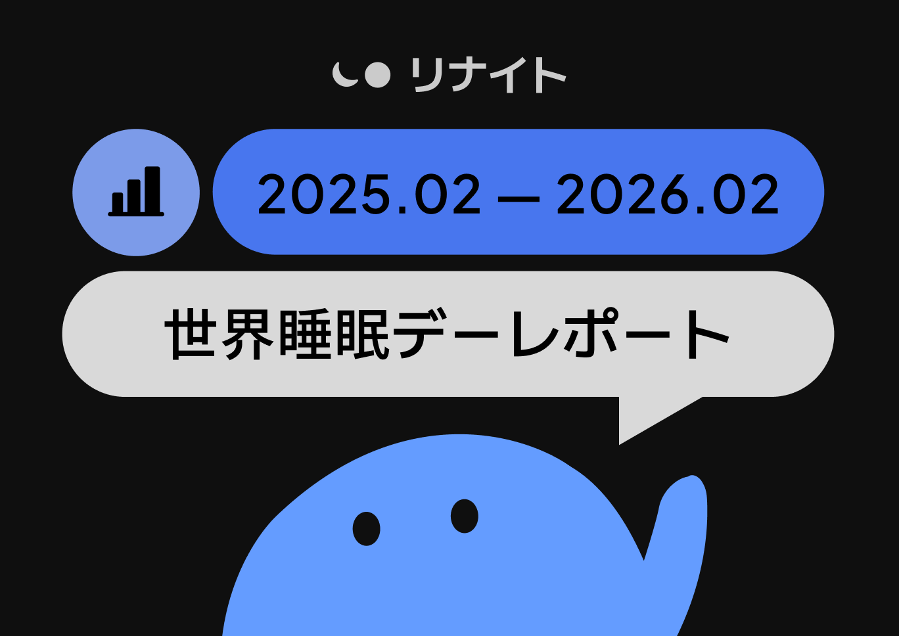
AI와 뇌과학 기반 초개인맞춤형 수면 솔루션 Renight(리나잇, 개발사: 주식회사 무니스)이 3월 13일 세계 수면의 날(World Sleep Day)을 맞아 일본인 사용자의 수면 만족도 분석 리포트를 발표했다.
Renight은 전 세계 160만 유저가 사용하는 구독형 수면 앱으로, 일본 앱스토어 헬스케어 카테고리 1위, 151개국 오늘의 앱에 선정된 바 있다. 사용자의 하루 상태, 생활 패턴, 수면 중 데이터를 종합 분석하여 매일 밤 최적화된 수면 환경을 제공한다.
이번 리포트는 2025년 2월부터 2026년 2월까지 약 1년간 Renight에 축적된 실제 수면 데이터를 분석한 결과다. 설문 조사가 아니라 매일 밤 사용자가 직접 기록한 실측 데이터를 기반으로 하며, 수면시간·취침시각·기상시각·수면 전 활동·감정 상태와 수면 만족도의 관계를 교차 분석했다.
조사 하이라이트
- 일본인 평균 수면시간 6시간 38분, Renight 전체 유저 평균 대비 21분 짧다
- 수면 만족도 6.67점(10점 만점), 전체 유저 대비 0.53점 낮다
- 7시간이 만족도의 분기점 — 6시간대에서 7시간으로 넘어가는 순간, 만족도가 급상승한다
- 행복한 밤 vs 우울한 밤, 만족도 차이 0.81점 — 수면시간 2시간 차이와 동일한 효과
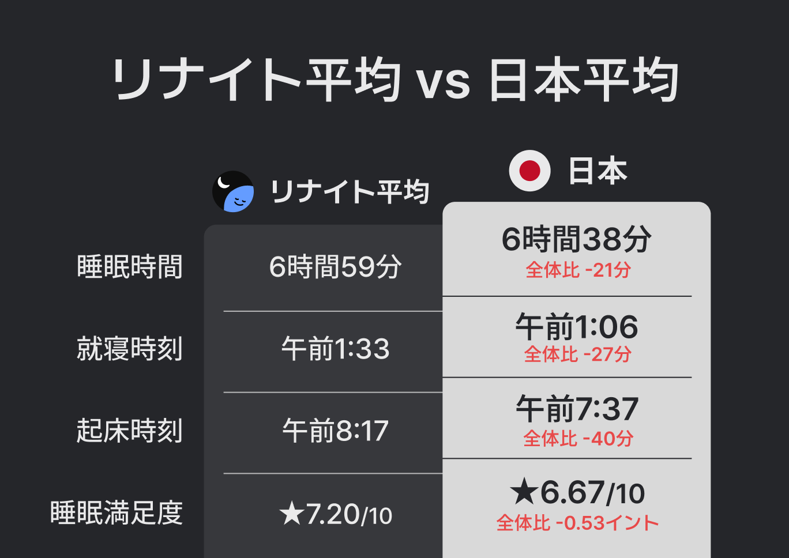
1. 일본인 수면의 현주소 — Renight 전체 유저 대비 비교
일본인 사용자의 수면 데이터를 일본 외 유저 평균과 비교했다. 수면시간, 취침·기상 시각, 수면 만족도 — 네 가지 지표 모두에서 일본인의 수치가 낮았다.
일본인은 일본 외 유저에 비해 27분 일찍 잠들고, 40분 더 일찍 일어난다. 수면시간은 21분 짧고, 수면 만족도도 0.53점 낮다.
2. "7시간의 벽" — 수면시간과 만족도의 관계
수면시간을 30분 단위로 나누어 만족도를 비교한 결과, 7시간이 명확한 분기점으로 나타났다.
- 수면시간이 7시간을 넘기면 만족도가 일본인 전체 평균(6.67점)을 초과한다
- 6시간 30분에서 7시간으로 넘어가는 구간에서 만족도가 6.67 → 6.83으로 급상승
- 이 30분의 상승폭(+0.16)은 다른 어떤 30분 구간보다 약 2배 큰 효과다
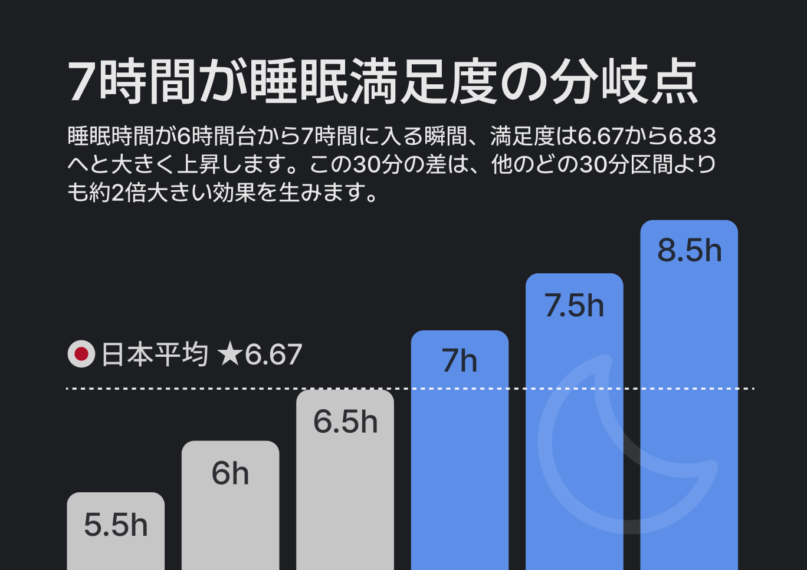
3. 취침 시각 — 0시 전에 잠들면 만족도가 높다
취침 시각을 1시간 단위로 나누어 비교한 결과, 자정 이전에 잠드는 경우 만족도가 가장 높았다.
- 21시 취침 시 만족도 6.86, 22시 6.84, 23시 6.80
- 23시에서 0시로 넘어가는 구간에서 만족도 감소폭이 가장 크다(-0.12)
- 취침 시각이 늦어질수록 만족도는 일관되게 하락한다
일본인 평균 취침 시각은 오전 1:06. 1시간만 앞당겨도 만족도 향상을 기대할 수 있다.
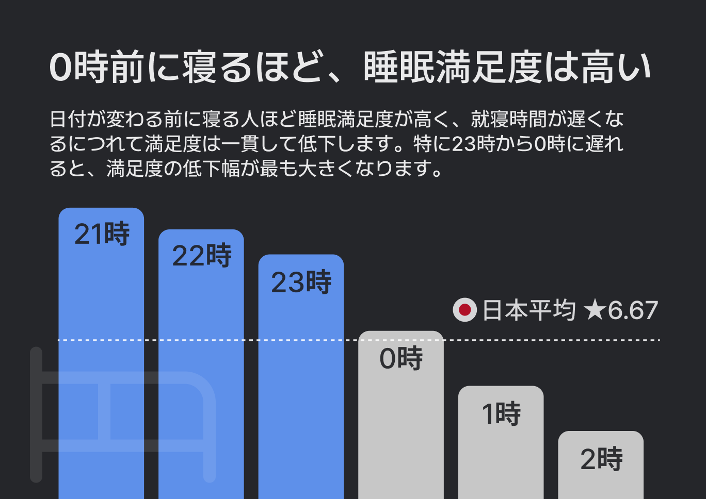
4. 기상 시각 — 늦게 일어날수록 만족도는 높다
기상 시각별 만족도를 비교한 결과, 대체로 늦게 일어날수록 만족도가 높은 경향을 보였다.
- 7시 → 8시로 기상을 늦출 때(+0.14)와 8시 → 9시(+0.13)에서 가장 큰 상승폭
- 일본인 과반수가 6~7시에 기상하지만, 이 시간대의 만족도(6.61~6.62)는 평균 이하
이는 수면시간이 길어지면서 자연스럽게 나타나는 결과로 해석된다.
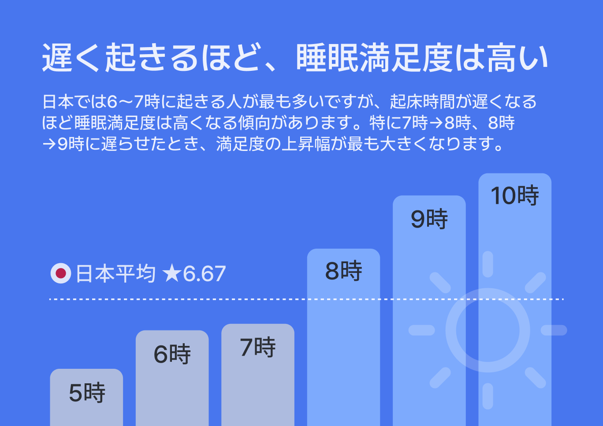
5. 취침 전 활동 — 운동과 산책이 수면의 질을 높인다
Renight 사용자가 잠들기 전 기록한 15가지 활동별 수면 만족도를 분석했다.
만족도가 높은 활동 (상위)
- 운동: 6.95 (+0.28)
- 산책: 6.93 (+0.27)
- 스트레칭: 6.82 (+0.16)
- 일기쓰기: 6.82 (+0.16)
만족도가 낮은 활동 (하위)
- TV 시청: 6.62 (-0.05)
- 커피: 6.58 (-0.09)
- 음주: 6.46 (-0.21)
- 니코틴: 6.45 (-0.21)
신체 활동이 수면 만족도와 가장 강한 양의 상관관계를 보였다. 반면 음주와 니코틴은 만족도 최하위로, 평균 대비 0.21점 낮다.
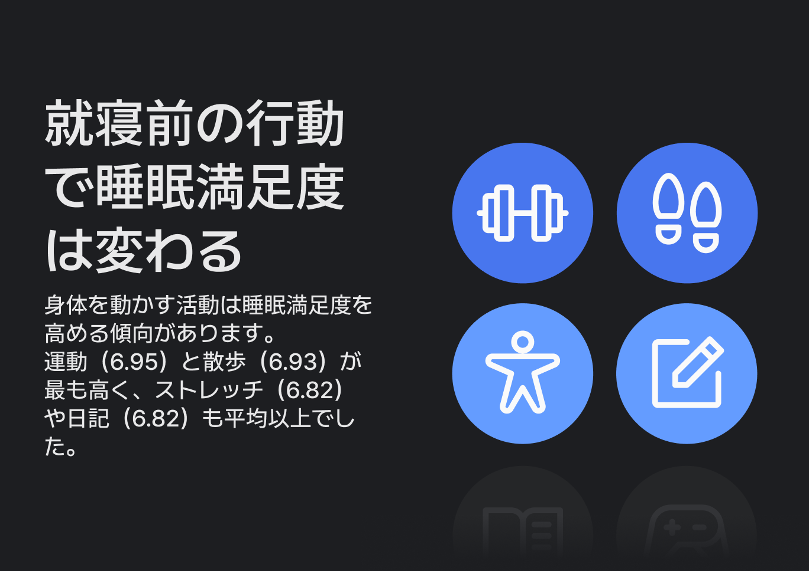
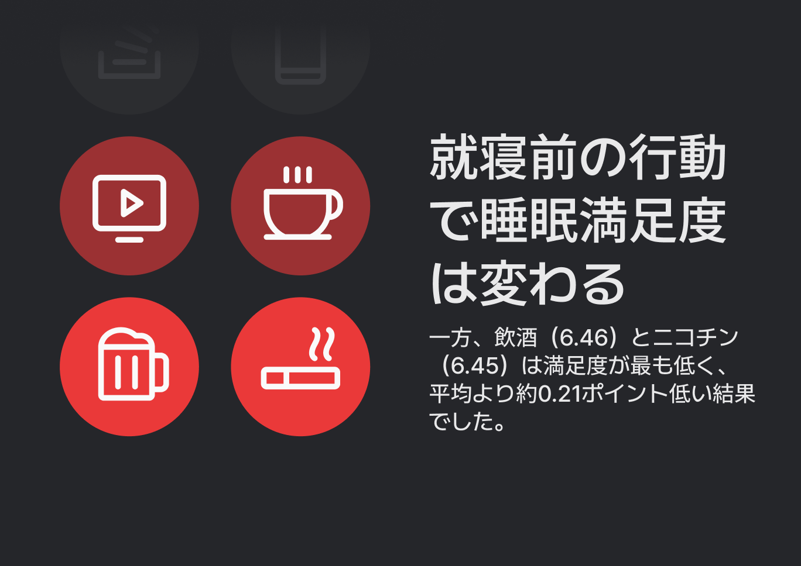
6. 술의 역설 — 더 오래 자지만, 더 나쁘게 잔다
음주와 수면의 관계에서 흥미로운 역설이 드러났다.
음주 후 수면시간은 평균보다 +12분 길다. 하지만 수면 만족도는 6.46으로, 전체 평균(6.67)보다 0.21점 낮다. 술은 잠을 빨리 오게 하지만, 수면의 질을 떨어뜨린다. 더 오래 자도 개운하지 않은 이유가 여기에 있다.
참고로 카페인은 수면시간을 직접 줄이고(-15분), 니코틴 사용자는 평균보다 늦은 오전 1:30에 취침하며 만족도도 6.45로 최하위다.
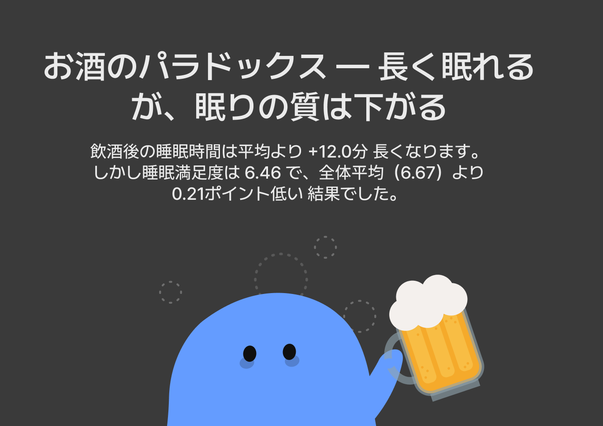
7. 감정 — 행복한 밤과 우울한 밤의 차이
잠들기 전 감정 상태별 수면 만족도를 분석한 결과, 감정이 수면의 질에 미치는 영향은 수면시간 못지않게 컸다.
긍정적 감정 (높은 만족도)
- 행복: 7.09
- 기쁨: 7.08
- 만족: 7.05
- 설렘: 7.00
부정적 감정 (낮은 만족도)
- 긴장: 6.49
- 불안: 6.44
- 슬픔: 6.43
- 스트레스: 6.41
- 우울: 6.28
행복한 밤(7.09)과 우울한 밤(6.28)의 만족도 차이는 0.81점. 이는 5시간 수면과 7시간 수면의 만족도 차이에 맞먹는 수준이다. 잘 자기 위해서는 잘 깨어 있는 것, 즉 낮 동안의 심리적 상태와 생활 습관도 중요하다.
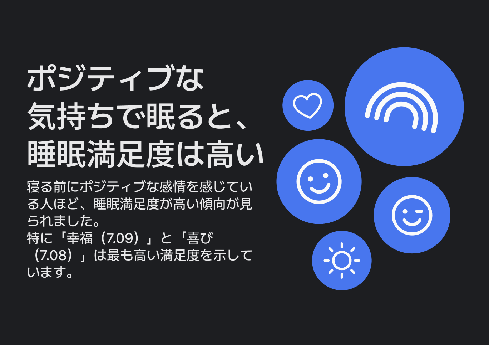
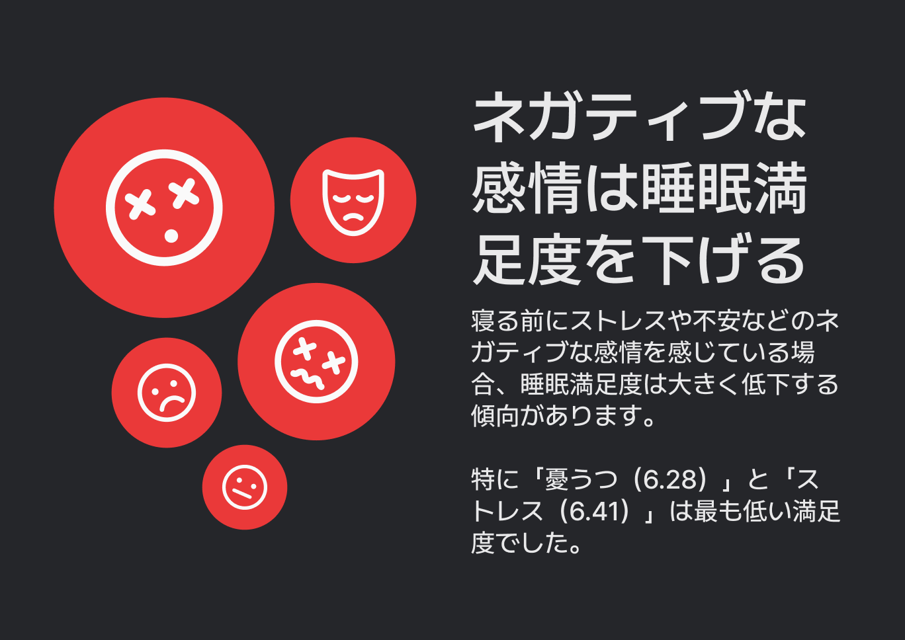
8. 주중 vs 주말 — 주말 보상 수면의 함정
요일별 수면 패턴을 비교한 결과, 주말에 더 오래 자고 만족도도 높았다.
주중 평균 수면시간은 6시간 34분(만족도 6.62), 주말은 6시간 51분(만족도 6.82)으로 주말에 17분 더 길고 만족도도 0.21점 높다.
다만 주말에는 취침과 기상 시각이 모두 뒤로 이동한다. 주중에 못 잔 만큼 주말에 만회하려 하지만, 더 늦게 자고 늦게 일어나는 것은 우리 몸에 매주 시차를 겪는 것 같은 스트레스를 준다. 취침 시각은 최대한 일정하게, 기상 시각도 너무 늦지 않게 유지하는 것이 다음 주의 컨디션을 위한 선택이다.
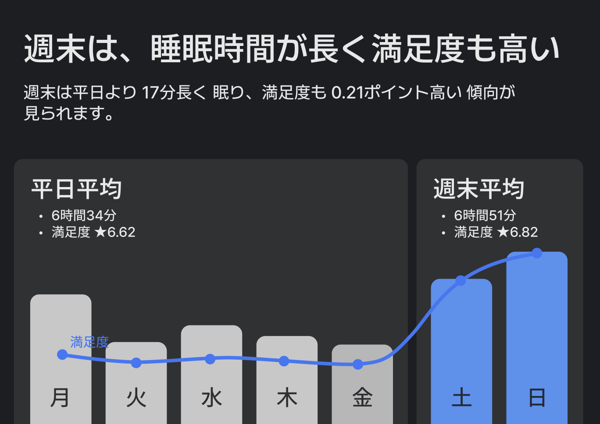
수면 만족도를 높이는 7가지 방법
Renight 데이터에서 확인된, 수면 만족도 향상에 실질적 효과가 있는 방법을 정리했다.
1) 7시간 이상 자기
7시간 수면자 만족도 6.83 vs 6시간대 6.58. 현재 일본인 평균 6시간 38분. 취침을 22분만 앞당기면 7시간을 확보할 수 있다.
2) 밤 11시(23시) 이전에 잠들기
22시 취침 만족도 6.84 vs 0시 이후 6.68. 취침 시각이 1시간 늦어질 때마다 만족도 약 0.10점 하락. 일본인 평균(1:06)에서 1시간만 앞당겨 보자.
3) 저녁에 가벼운 운동이나 산책하기
운동 6.95(+0.28) / 산책 6.93(+0.27) — 만족도 1, 2위. 20~30분의 가벼운 운동이면 충분하다.
4) 스트레칭이나 일기쓰기로 마무리하기
스트레칭 6.82(+0.16) / 일기쓰기 6.82(+0.16). 취침 전 5~10분이면 된다. 독서(6.79)도 좋은 선택이다.
5) 취침 전 음주 줄이기
음주 6.46(-0.21) — 수면 +12분이지만 만족도 최하위. 술은 수면시간을 늘리지만 질을 떨어뜨린다. 주 3일만 음주 없이 취침해 보자.
6) 카페인과 니코틴 줄이기
카페인 -15분 / 니코틴 만족도 -0.21. 오후 2시 이후 카페인 차단, 취침 2시간 전 흡연 중단을 시도해 보자.
7) 긍정적인 마음으로 잠들기
행복한 밤 7.09 vs 우울한 밤 6.28 → 0.81점 차이. 감정 상태가 수면 만족도에 미치는 영향은 수면시간 2시간 차이와 동일. 취침 전 감사한 일 3가지를 떠올려 보자.
가장 효과적인 조합: 22시 이전 취침 + 7시간 이상 수면 + 저녁 산책/운동 + 긍정적 감정 → 예상 만족도 7.2점 이상 (현재 일본 평균 6.67 대비 +0.53점)
Renight 소개
Renight(리나잇)은 AI와 뇌과학을 기반으로 한 초개인맞춤형 수면 솔루션이다. 사용자의 하루 상태, 생활 패턴, 수면 중 데이터를 종합 분석하여 매일 밤 최적화된 수면 환경을 제공하는 구독형 수면 앱이다.
- 전 세계 유저 160만
- 일본 앱스토어 헬스케어 1위
- 151개국 오늘의 앱 선정
- 깊은 수면 2배 상승 검증
Renight은 단순히 잠을 돕는 것이 아니라, 밤을 회복의 시간으로 다시 정의한다.
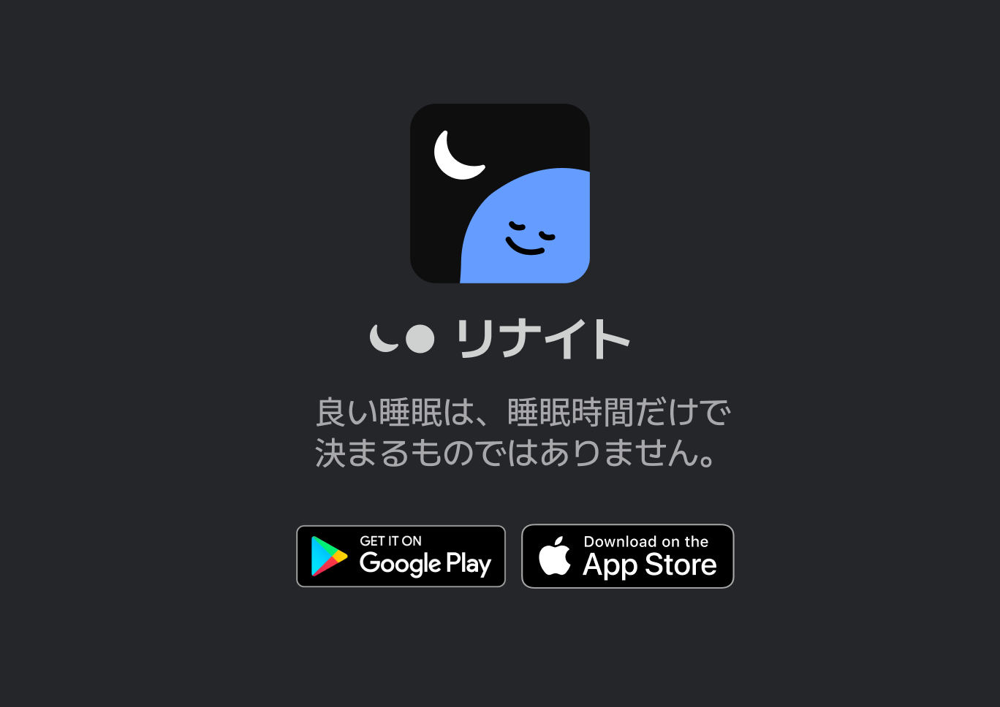
App Store: https://apps.apple.com/app/renight
Google Play: https://play.google.com/store/apps/details?id=com.munice.renight
분석 개요
- 데이터 기간: 2025년 2월 ~ 2026년 2월
- 분석 대상: Renight 일본인 사용자 수면 데이터
- 분석 방법: 수면시간·시각·활동·감정별 만족도 교차 분석
- 만족도 지표: 기상 직후 사용자가 1~10점으로 자가 평가
참고 문헌
- Kohyama, J. (2021). Which is more important for health: sleep quantity or sleep quality?. Children, 8(7), 542.
- Ahrensberg, H., Christensen, A. I., Andersen, S., & Petersen, C. B. (2025). Comparison of self-reported sleep sufficiency and accelerometer-measured sleep duration in relation to mental health, physical health, and life satisfaction. Frontiers in sleep, 4, 1661250.
- Hirshkowitz, M., Whiton, K., Albert, S. M., Alessi, C., Bruni, O., DonCarlos, L. et al. (2015). National Sleep Foundation's sleep time duration recommendations: methodology and results summary. Sleep health, 1(1), 40-43.
- Protogerou, C., Gladwell, V. F., & Martin, C. R. (2024). Conceptualizing sleep satisfaction: a rapid review. Behavioral Sciences, 14(10), 942.
- Tonetti, L., Andreose, A., Bacaro, V., Grimaldi, M., Natale, V., & Crocetti, E. (2022). Different effects of social jetlag and weekend catch-up sleep on well-being of adolescents according to the actual sleep duration. International Journal of Environmental Research and Public Health, 20(1), 574.
- Hsiao, F. C., Huang, Y. H., & Yang, C. M. (2025). The sleep paradox: The effect of weekend catch-up sleep on homeostasis and circadian misalignment. Neuroscience & Biobehavioral Reviews, 175, 106231.